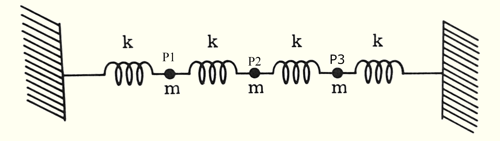

Problem 2-2: Three equal masses are connected
together by four springs with the same force sonstant k, as shown in the figure:

Find the eigenfrequencies of longitudinal oscillation and the normal mode
of motion associated with each frequency (pp. 6).
The Problem
We need to solve a system of three ordinary differential equations. Jackson prompts us to use energy mechanics
to describe our system behavior, rather than Newton's equation for motion.
This question is reduced to an eigenvalue (linear algebra) problem,
demonstrating that frequencies of vibration
only occur at particular values rather than along some continuum.
Since our masses vibrate only along one spatial dimension, we can define generalized
coordinates of index j to describe motion for each particle:
$x_j(t)$, which denotes the displacement of the j-th particle relative to its equillibrium position.
The total kinetic energy (T)
of our system may be written as a linear sum of each component kinetic energy:
$$\blbox{T= \frac{1}{2} \sum_{j=1}^{3} m_j \dot{x}_j^2 }\tag{Eq. 1.1}$$
In our system $m_1=m_2=m_3=m$, so (Eq. 1) can be expanded and simplified to the following sum:
$$\blbox{T=\frac{1}{2}m \left(
\dot{x}_1^2 + \dot{x}_3^2 + \dot{x}_3^2
\right)} \tag{Eq. 1.2}$$
The total potential energy (V) of our system is a sum of harmonic potentials - one term for each spring: